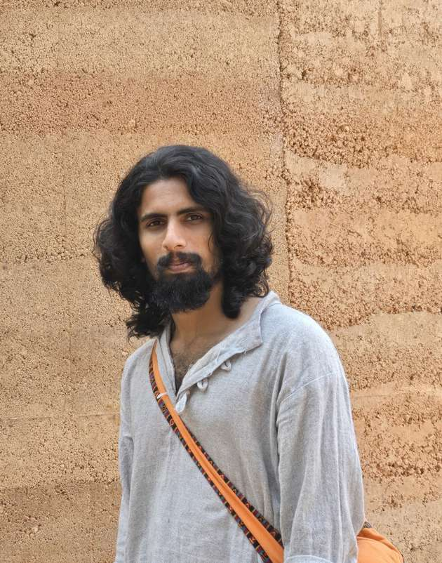

Manu M Das (b. Palakkad, Kerala; based in New Delhi) is a visual artist whose practice is informed by direct experience within commercial and logistical chains-from a childhood within a family shop to roles as a construction labourer, postman, vendor, and delivery agent. He investigates urban transactions and material history and memory. His ongoing research in New Delhi/NCR employs a rigorous, analytical method, including data logging with GPS coordinates and physical labels, to achieve a rigorous research-oriented practice that contrasts with violent, extreme material compression.
Recalling logistical systems and archaeological core samples, his highly conceptual work contrasts mass-produced artefacts like unglazed kulhad cups and standardised bleached textiles against non-conventional industrial remnants including corroded gears and barbed wire. Within the framework of Political Ecology, these industrial elements function as predatory extraction mechanisms, designed to physically erode Material Memory. As Manu explains, "My practice is an interrogation of transaction-visualising the precise point where mass-culture artefacts become waste." He develops a coherent body of installation work built from Transactional Archetypes, interrogating the shadow of contemporary civilisation and technology. The work analyses the region's progression from raw soil to a manufactured geology of disposal, visualising the inescapable pathways of commercial memory and its systemic nullification and technology.